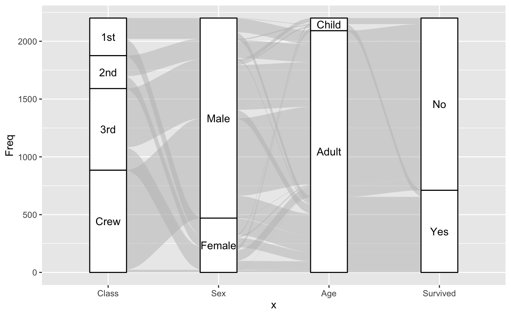
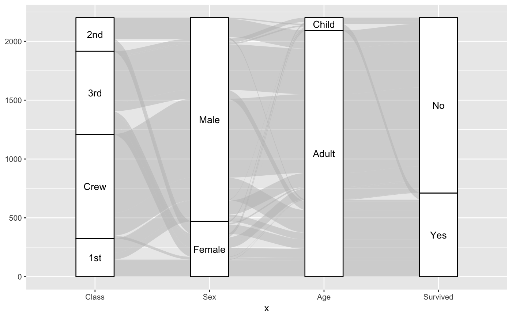
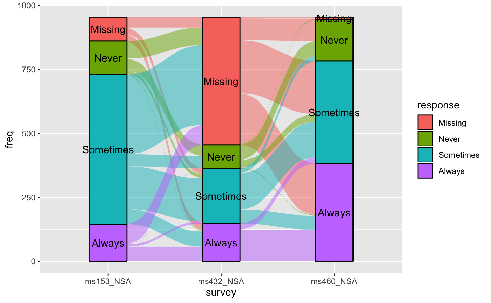
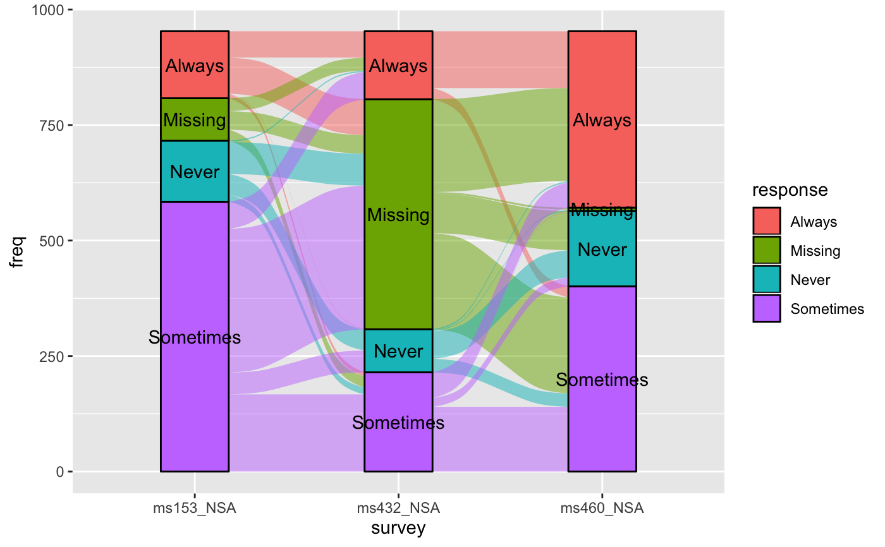
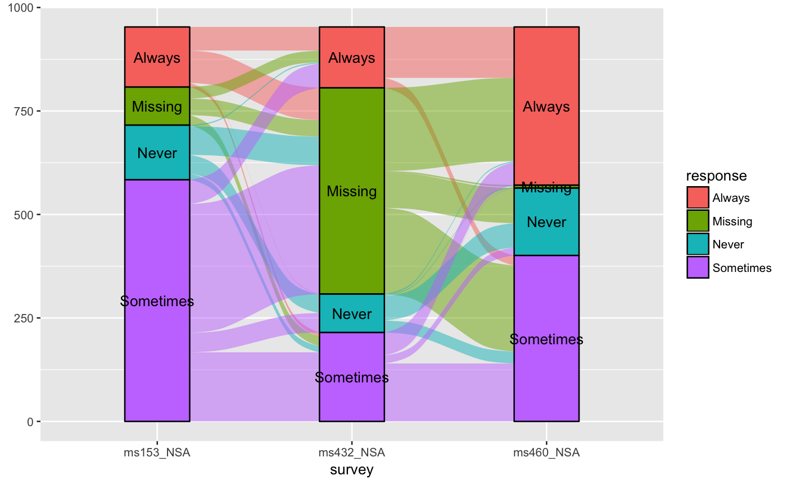
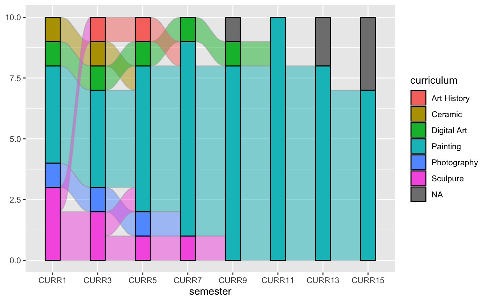
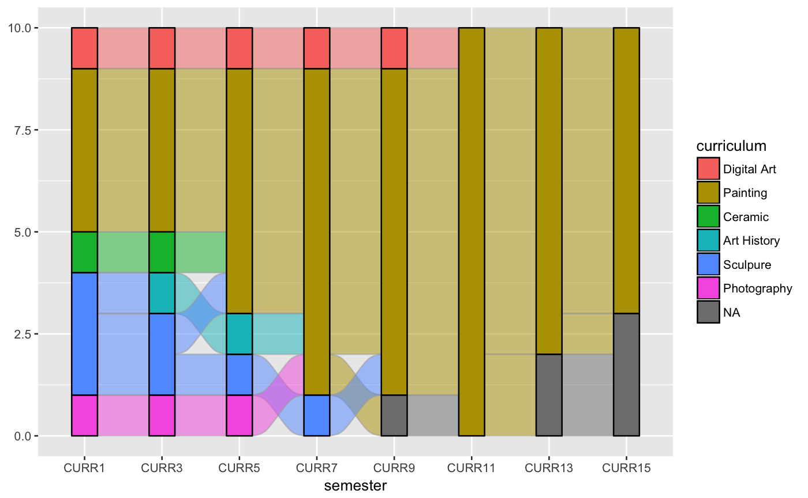
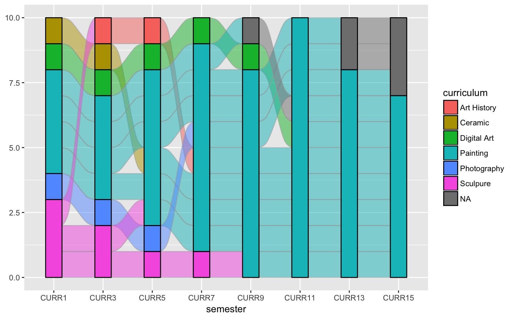
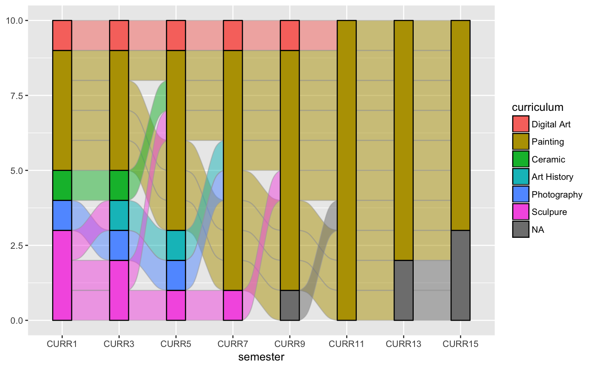

minimize-overlaps.RdThe function optimize_strata() attempts to order the strata at each
axis so as to maximize the readability of the diagram, by minimizing a
weighted total of the overlaps of crossing flows. The weight assigned to each
overlap is the product of the mean weights of the overlapping flows at
each incident axis. The function permute_strata() applies the stratum
permutations to the stratum variable of the data frame; the experimental
function permute_axis_strata() applies a list of permutations
axis-wise, potentially resulting in different orderings of the same strata at
different axes.
optimize_strata(data, key, value, id, weight = NULL, method = NULL, niter = 6) permute_strata(data, key, value, id, perm) permute_axis_strata(data, key, value, id, perms)
| data | Data frame in lode form (see |
|---|---|
| key, value, id | Numeric or character; the fields of |
| weight | Numeric or character; the field of |
| method | Character; whether to exhaust all permutations of all axes
( |
| niter | Positive integer; if |
| perm, perms | An integer vector ( |
data(Titanic) titanic <- to_lodes_form(as.data.frame(Titanic), axes = 1:4) ggplot(titanic, aes(x = x, stratum = stratum, alluvium = alluvium, y = Freq, label = stratum)) + geom_alluvium() + geom_stratum() + geom_text(stat = "stratum")weight_perm <- optimize_strata( titanic, id = "alluvium", key = "x", value = "stratum", weight = "Freq" )#>#> Warning: `permute_axis_strata()` is experimental.#> Warning: `permute_axis_strata()` is experimental.#> Warning: `permute_axis_strata()` is experimental.#> Warning: `permute_axis_strata()` is experimental.#> Warning: `permute_axis_strata()` is experimental.#> Warning: `permute_axis_strata()` is experimental.#> Warning: `permute_axis_strata()` is experimental.#> Warning: `permute_axis_strata()` is experimental.#> Warning: `permute_axis_strata()` is experimental.#> Warning: `permute_axis_strata()` is experimental.#> Warning: `permute_axis_strata()` is experimental.#> Warning: `permute_axis_strata()` is experimental.#> Warning: `permute_axis_strata()` is experimental.#> Warning: `permute_axis_strata()` is experimental.#> Warning: `permute_axis_strata()` is experimental.#> Warning: `permute_axis_strata()` is experimental.#> Warning: `permute_axis_strata()` is experimental.#> Warning: `permute_axis_strata()` is experimental.#> Warning: `permute_axis_strata()` is experimental.#> Warning: `permute_axis_strata()` is experimental.#> Warning: `permute_axis_strata()` is experimental.#> Warning: `permute_axis_strata()` is experimental.#> Warning: `permute_axis_strata()` is experimental.#> Warning: `permute_axis_strata()` is experimental.#> Warning: `permute_axis_strata()` is experimental.#> Warning: `permute_axis_strata()` is experimental.#> Warning: `permute_axis_strata()` is experimental.#> Warning: `permute_axis_strata()` is experimental.#> Warning: `permute_axis_strata()` is experimental.#> Warning: `permute_axis_strata()` is experimental.#> Warning: `permute_axis_strata()` is experimental.#> Warning: `permute_axis_strata()` is experimental.#> Warning: `permute_axis_strata()` is experimental.#> Warning: `permute_axis_strata()` is experimental.#> Warning: `permute_axis_strata()` is experimental.#> Warning: `permute_axis_strata()` is experimental.#> Warning: `permute_axis_strata()` is experimental.#> Warning: `permute_axis_strata()` is experimental.#> Warning: `permute_axis_strata()` is experimental.#> Warning: `permute_axis_strata()` is experimental.#> Warning: `permute_axis_strata()` is experimental.#> Warning: `permute_axis_strata()` is experimental.#> Warning: `permute_axis_strata()` is experimental.#> Warning: `permute_axis_strata()` is experimental.#> Warning: `permute_axis_strata()` is experimental.#> Warning: `permute_axis_strata()` is experimental.#> Warning: `permute_axis_strata()` is experimental.#> Warning: `permute_axis_strata()` is experimental.#> Warning: `permute_axis_strata()` is experimental.#> Warning: `permute_axis_strata()` is experimental.#> Warning: `permute_axis_strata()` is experimental.#> Warning: `permute_axis_strata()` is experimental.#> Warning: `permute_axis_strata()` is experimental.#> Warning: `permute_axis_strata()` is experimental.#> Warning: `permute_axis_strata()` is experimental.#> Warning: `permute_axis_strata()` is experimental.#> Warning: `permute_axis_strata()` is experimental.#> Warning: `permute_axis_strata()` is experimental.#> Warning: `permute_axis_strata()` is experimental.#> Warning: `permute_axis_strata()` is experimental.#> Warning: `permute_axis_strata()` is experimental.#> Warning: `permute_axis_strata()` is experimental.#> Warning: `permute_axis_strata()` is experimental.#> Warning: `permute_axis_strata()` is experimental.#> Warning: `permute_axis_strata()` is experimental.#> Warning: `permute_axis_strata()` is experimental.#> Warning: `permute_axis_strata()` is experimental.#> Warning: `permute_axis_strata()` is experimental.#> Warning: `permute_axis_strata()` is experimental.#> Warning: `permute_axis_strata()` is experimental.#> Warning: `permute_axis_strata()` is experimental.#> Warning: `permute_axis_strata()` is experimental.#> Warning: `permute_axis_strata()` is experimental.#> Warning: `permute_axis_strata()` is experimental.#> Warning: `permute_axis_strata()` is experimental.#> Warning: `permute_axis_strata()` is experimental.#> Warning: `permute_axis_strata()` is experimental.#> Warning: `permute_axis_strata()` is experimental.#> Warning: `permute_axis_strata()` is experimental.#> Warning: `permute_axis_strata()` is experimental.#> Warning: `permute_axis_strata()` is experimental.#> Warning: `permute_axis_strata()` is experimental.#> Warning: `permute_axis_strata()` is experimental.#> Warning: `permute_axis_strata()` is experimental.#> Warning: `permute_axis_strata()` is experimental.#> Warning: `permute_axis_strata()` is experimental.#> Warning: `permute_axis_strata()` is experimental.#> Warning: `permute_axis_strata()` is experimental.#> Warning: `permute_axis_strata()` is experimental.#> Warning: `permute_axis_strata()` is experimental.#> Warning: `permute_axis_strata()` is experimental.#> Warning: `permute_axis_strata()` is experimental.#> Warning: `permute_axis_strata()` is experimental.#> Warning: `permute_axis_strata()` is experimental.#> Warning: `permute_axis_strata()` is experimental.#> Warning: `permute_axis_strata()` is experimental.#> Warning: `permute_axis_strata()` is experimental.#> Warning: `permute_axis_strata()` is experimental.#> Warning: `permute_axis_strata()` is experimental.#> Warning: `permute_axis_strata()` is experimental.#> Warning: `permute_axis_strata()` is experimental.#> Warning: `permute_axis_strata()` is experimental.#> Warning: `permute_axis_strata()` is experimental.#> Warning: `permute_axis_strata()` is experimental.#> Warning: `permute_axis_strata()` is experimental.#> Warning: `permute_axis_strata()` is experimental.#> Warning: `permute_axis_strata()` is experimental.#> Warning: `permute_axis_strata()` is experimental.#> Warning: `permute_axis_strata()` is experimental.#> Warning: `permute_axis_strata()` is experimental.#> Warning: `permute_axis_strata()` is experimental.#> Warning: `permute_axis_strata()` is experimental.#> Warning: `permute_axis_strata()` is experimental.#> Warning: `permute_axis_strata()` is experimental.#> Warning: `permute_axis_strata()` is experimental.#> Warning: `permute_axis_strata()` is experimental.#> Warning: `permute_axis_strata()` is experimental.#> Warning: `permute_axis_strata()` is experimental.#> Warning: `permute_axis_strata()` is experimental.#> Warning: `permute_axis_strata()` is experimental.#> Warning: `permute_axis_strata()` is experimental.#> Warning: `permute_axis_strata()` is experimental.#> Warning: `permute_axis_strata()` is experimental.#> Warning: `permute_axis_strata()` is experimental.#> Warning: `permute_axis_strata()` is experimental.#> Warning: `permute_axis_strata()` is experimental.#> Warning: `permute_axis_strata()` is experimental.#> Warning: `permute_axis_strata()` is experimental.#> Warning: `permute_axis_strata()` is experimental.#> Warning: `permute_axis_strata()` is experimental.#> Warning: `permute_axis_strata()` is experimental.#> Warning: `permute_axis_strata()` is experimental.#> Warning: `permute_axis_strata()` is experimental.#> Warning: `permute_axis_strata()` is experimental.#> Warning: `permute_axis_strata()` is experimental.#> Warning: `permute_axis_strata()` is experimental.#> Warning: `permute_axis_strata()` is experimental.#> Warning: `permute_axis_strata()` is experimental.#> Warning: `permute_axis_strata()` is experimental.#> Warning: `permute_axis_strata()` is experimental.#> Warning: `permute_axis_strata()` is experimental.#> Warning: `permute_axis_strata()` is experimental.#> Warning: `permute_axis_strata()` is experimental.#> Warning: `permute_axis_strata()` is experimental.#> Warning: `permute_axis_strata()` is experimental.#> Warning: `permute_axis_strata()` is experimental.#> Warning: `permute_axis_strata()` is experimental.#> Warning: `permute_axis_strata()` is experimental.#> Warning: `permute_axis_strata()` is experimental.#> Warning: `permute_axis_strata()` is experimental.#> Warning: `permute_axis_strata()` is experimental.#> Warning: `permute_axis_strata()` is experimental.#> Warning: `permute_axis_strata()` is experimental.#> Warning: `permute_axis_strata()` is experimental.#> Warning: `permute_axis_strata()` is experimental.#> Warning: `permute_axis_strata()` is experimental.#> Warning: `permute_axis_strata()` is experimental.#> Warning: `permute_axis_strata()` is experimental.#> Warning: `permute_axis_strata()` is experimental.#> Warning: `permute_axis_strata()` is experimental.#> Warning: `permute_axis_strata()` is experimental.#> Warning: `permute_axis_strata()` is experimental.#> Warning: `permute_axis_strata()` is experimental.#> Warning: `permute_axis_strata()` is experimental.#> Warning: `permute_axis_strata()` is experimental.#> Warning: `permute_axis_strata()` is experimental.#> Warning: `permute_axis_strata()` is experimental.#> Warning: `permute_axis_strata()` is experimental.#> Warning: `permute_axis_strata()` is experimental.#> Warning: `permute_axis_strata()` is experimental.#> Warning: `permute_axis_strata()` is experimental.#> Warning: `permute_axis_strata()` is experimental.#> Warning: `permute_axis_strata()` is experimental.#> Warning: `permute_axis_strata()` is experimental.#> Warning: `permute_axis_strata()` is experimental.#> Warning: `permute_axis_strata()` is experimental.#> Warning: `permute_axis_strata()` is experimental.#> Warning: `permute_axis_strata()` is experimental.#> Warning: `permute_axis_strata()` is experimental.#> Warning: `permute_axis_strata()` is experimental.#> Warning: `permute_axis_strata()` is experimental.#> Warning: `permute_axis_strata()` is experimental.#> Warning: `permute_axis_strata()` is experimental.#> Warning: `permute_axis_strata()` is experimental.#> Warning: `permute_axis_strata()` is experimental.#> Warning: `permute_axis_strata()` is experimental.#> Warning: `permute_axis_strata()` is experimental.#> Warning: `permute_axis_strata()` is experimental.#> Warning: `permute_axis_strata()` is experimental.#> Warning: `permute_axis_strata()` is experimental.#> Warning: `permute_axis_strata()` is experimental.#> Warning: `permute_axis_strata()` is experimental.weight_perm#> $perm #> [1] 5 6 7 8 9 10 1 2 3 4 #> #> $perms #> $perms[[1]] #> [1] 2 3 4 1 #> #> $perms[[2]] #> [1] 1 2 #> #> $perms[[3]] #> [1] 1 2 #> #> $perms[[4]] #> [1] 1 2 #> #> #> $obj #> [1] 953223 #> #> $obj_orig #> [1] 1000913 #>titanic_weight <- permute_axis_strata( titanic, id = "alluvium", key = "x", value = "stratum", perms = weight_perm$perms )#> Warning: `permute_axis_strata()` is experimental.ggplot(titanic_weight, aes(x = x, stratum = stratum, alluvium = alluvium, y = Freq, label = stratum)) + geom_alluvium() + geom_stratum() + geom_text(stat = "stratum")# multiple axes with the same strata data(vaccinations) ggplot(vaccinations, aes(x = survey, stratum = response, alluvium = subject, y = freq, fill = response, label = response)) + geom_flow() + geom_stratum() + geom_text(stat = "stratum")count_perm <- optimize_strata( vaccinations, id = "subject", key = "survey", value = "response" )#>count_perm#> $perm #> [1] 4 1 2 3 #> #> $perms #> $perms[[1]] #> [1] 4 1 2 3 #> #> $perms[[2]] #> [1] 4 1 2 3 #> #> $perms[[3]] #> [1] 4 1 2 3 #> #> #> $obj #> [1] 461 #> #> $obj_orig #> [1] 607 #>vaccinations_count <- permute_strata( vaccinations, id = "subject", key = "survey", value = "response", perm = count_perm$perm ) ggplot(vaccinations_count, aes(x = survey, stratum = response, alluvium = subject, y = freq, fill = response, label = response)) + geom_flow() + geom_stratum() + geom_text(stat = "stratum")weight_perm <- optimize_strata( vaccinations, id = "subject", key = "survey", value = "response", weight = "freq" )#>weight_perm#> $perm #> [1] 4 1 2 3 #> #> $perms #> $perms[[1]] #> [1] 4 1 2 3 #> #> $perms[[2]] #> [1] 4 1 2 3 #> #> $perms[[3]] #> [1] 4 1 2 3 #> #> #> $obj #> [1] 139368 #> #> $obj_orig #> [1] 341518 #>vaccinations_weight <- permute_strata( vaccinations, id = "subject", key = "survey", value = "response", perm = weight_perm$perm ) ggplot(vaccinations_weight, aes(x = survey, stratum = response, alluvium = subject, y = freq, fill = response, label = response)) + geom_flow() + geom_stratum() + geom_text(stat = "stratum")# many axes with different subsets of strata data(majors) ggplot(majors, aes(x = semester, stratum = curriculum, alluvium = student, fill = curriculum, label = curriculum)) + geom_flow(color = "darkgray") + geom_stratum()count_perm <- optimize_strata( majors, id = "student", key = "semester", value = "curriculum", method = "heuristic", niter = 12 ) count_perm#> $perm #> [1] 4 2 5 6 1 3 7 #> #> $perms #> $perms[[1]] #> [1] 2 5 4 1 3 #> #> $perms[[2]] #> [1] 3 1 6 5 2 4 #> #> $perms[[3]] #> [1] 2 1 5 4 3 #> #> $perms[[4]] #> [1] 1 3 2 #> #> $perms[[5]] #> [1] 1 2 #> #> $perms[[6]] #> [1] 1 #> #> $perms[[7]] #> [1] 1 #> #> $perms[[8]] #> [1] 1 #> #> #> $obj #> [1] 39 #> #> $obj_orig #> [1] 53 #>majors_perm <- permute_strata( majors, id = "student", key = "semester", value = "curriculum", perm = count_perm$perm ) ggplot(majors_perm, aes(x = semester, stratum = curriculum, alluvium = student, fill = curriculum, label = curriculum)) + geom_flow(color = "darkgray") + geom_stratum()#> Warning: Factor `fill` contains implicit NA, consider using `forcats::fct_explicit_na`#> Warning: Factor `stratum` contains implicit NA, consider using `forcats::fct_explicit_na`#> Warning: Factor `label` contains implicit NA, consider using `forcats::fct_explicit_na`# many axes and strata subsets, tracking individuals/cohorts ggplot(majors, aes(x = semester, stratum = curriculum, alluvium = student, fill = curriculum, label = curriculum)) + geom_flow(stat = "alluvium", lode.guidance = "rightleft", color = "darkgray") + geom_stratum()count_perm <- optimize_strata( majors, id = "student", key = "semester", value = "curriculum", method = "heuristic", niter = 12 ) count_perm#> $perm #> [1] 4 2 5 6 7 1 3 #> #> $perms #> $perms[[1]] #> [1] 2 5 4 1 3 #> #> $perms[[2]] #> [1] 3 1 6 5 2 4 #> #> $perms[[3]] #> [1] 2 1 5 4 3 #> #> $perms[[4]] #> [1] 1 3 2 #> #> $perms[[5]] #> [1] 1 2 #> #> $perms[[6]] #> [1] 1 #> #> $perms[[7]] #> [1] 1 #> #> $perms[[8]] #> [1] 1 #> #> #> $obj #> [1] 39 #> #> $obj_orig #> [1] 53 #>majors_perm <- permute_strata( majors, id = "student", key = "semester", value = "curriculum", perm = count_perm$perm ) ggplot(majors_perm, aes(x = semester, stratum = curriculum, alluvium = student, fill = curriculum, label = curriculum)) + geom_flow(stat = "alluvium", lode.guidance = "rightleft", color = "darkgray") + geom_stratum()